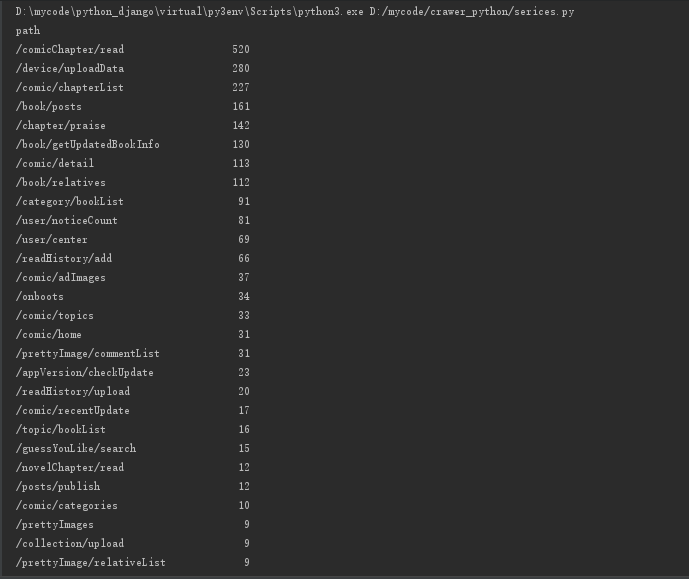
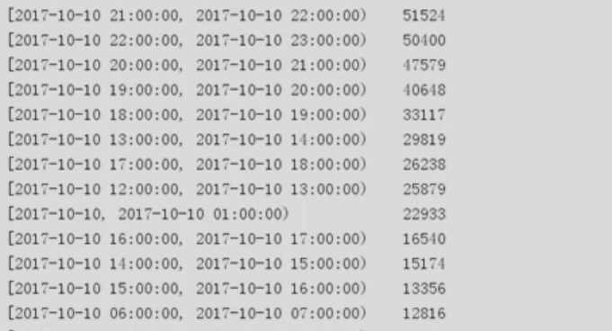

利用pandas读取apache日志，分析访问最多的api，统计访问量最高的时段
文章目录
利用pandas读取apache日志，分析访问最多的api，统计访问量最高的时段
统计访问最多的path(api路径)
import numpy as np import pandas as pd import json if __name__=='__main__': #过滤时间以及不是json对象的字符串 def isJsonlike(str): try: json.loads(str) return True except: return False with open('./httpd.log',encoding='utf-8') as file: loglist = [json.loads(str) for str in file if isJsonlike(str)] file.close() log = pd.DataFrame(loglist) print(log.groupby('path').size().sort_values(ascending=False))

- 计算出访问量最高的时间段（以小时为例子）
import numpy as np
import pandas as pd
from sqlalchemy import create_engine
from common.config import dburl
import json
if __name__=='__main__':
#过滤时间以及不是json对象的字符串
def isJsonlike(str):
try:
json.loads(str)
return True
except:
return False
with open('./httpd.log',encoding='utf-8') as file:
loglist = [json.loads(str) for str in file if isJsonlike(str)]
file.close()
log = pd.DataFrame(loglist)
#构建时间段
datelist = pd.date_range('2017-10-10 00:00:00', end='2017-10-11 00:00:00', closed='left',freq='h')
#转换为时间格式
log['dt'] = pd.to_datetime(log['dt'])
log['dr'] = pd.cut(log['dt'],bins=datelist,right=False)
print(log.groupby('dr').size().sort_values(ascending=False))

上述代码不懂的可以查询手册查询其用法